Steering - EPS Indicator ON/DTC 32-09 Or 61-04 Set
09-043July 12, 2011
Applies To
Steering Feels Heavy; EPS Indicator Comes On With DTC 32-09 or 61-04
(Supercedes 09-043, dated July 7, 2009, to revise the information marked by black bars)
REVISION SUMMARY
SYMPTOM
The steering feels heavier than normal, and the EPS indicator comes on with DTC 32-09 (current sensor [initial diagnosis]) or DTC 61-04 (open/short in the EPS motor harness [steering diagnosis]). These symptoms may be intermittent.
PROBABLE CAUSE
The EPS control unit has malfunctioned.
CORRECTIVE ACTION
Replace the EPS control unit.
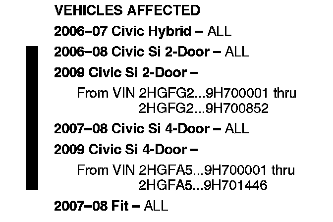
VEHICLES AFFECTED
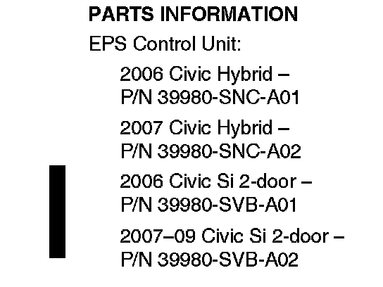
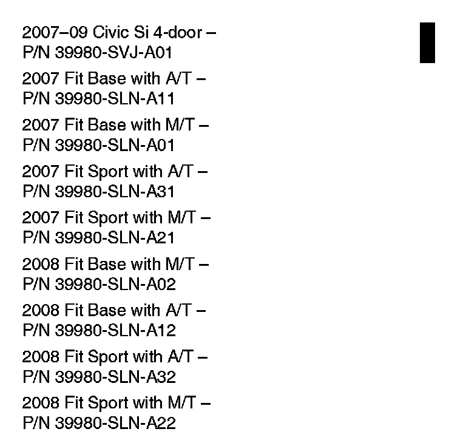
PARTS INFORMATION
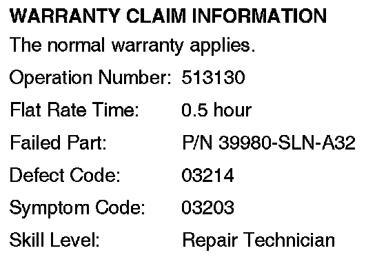
WARRANTY CLAIM INFORMATION
DIAGNOSIS
Diagnose the cause of the DTC with the appropriate troubleshooting procedure from the appropriate service manual.
Is the cause of the DTC a faulty EPS control unit?
Yes - Go to REPAIR PROCEDURE A - CIVIC or REPAIR PROCEDURE B - FIT.
No - Repair the vehicle as indicated by the troubleshooting procedure.
REPAIR PROCEDURE A - CIVIC
NOTE:
Make sure you have the anti-theft code for the audio system. Write down the audio presets (AM and FM) and the XM audio presets (if equipped).
1. Make sure the ignition switch is turned to LOCK (0), then disconnect the negative cable from the 12 V battery.
2. Remove the passenger's dashboard undercover:
^ Gently pull out the rear edge to detach the clips.
^ Pull the undercover away to release the pins from the holders.
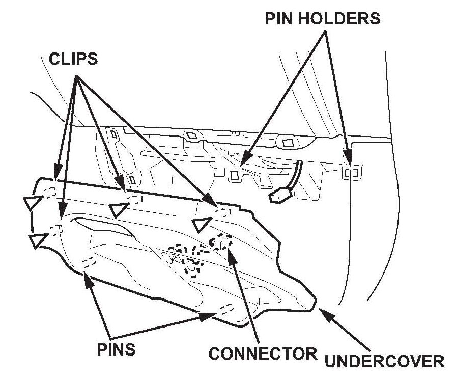
^ For some models: Disconnect the footwell light connector.
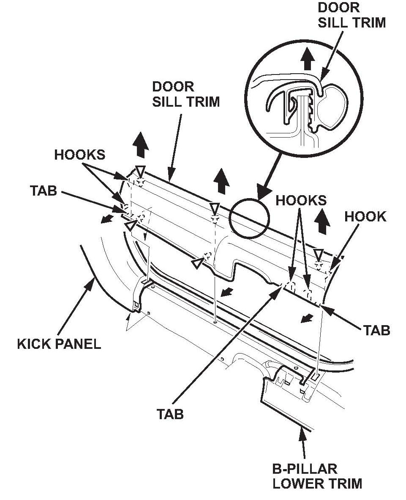
3. Remove the passenger's front door sill trim by detaching the hooks and tabs from the front passenger's side kick panel and the B-pillar lower trim. Then remove the door sill trim by pulling it up to detach its clips.
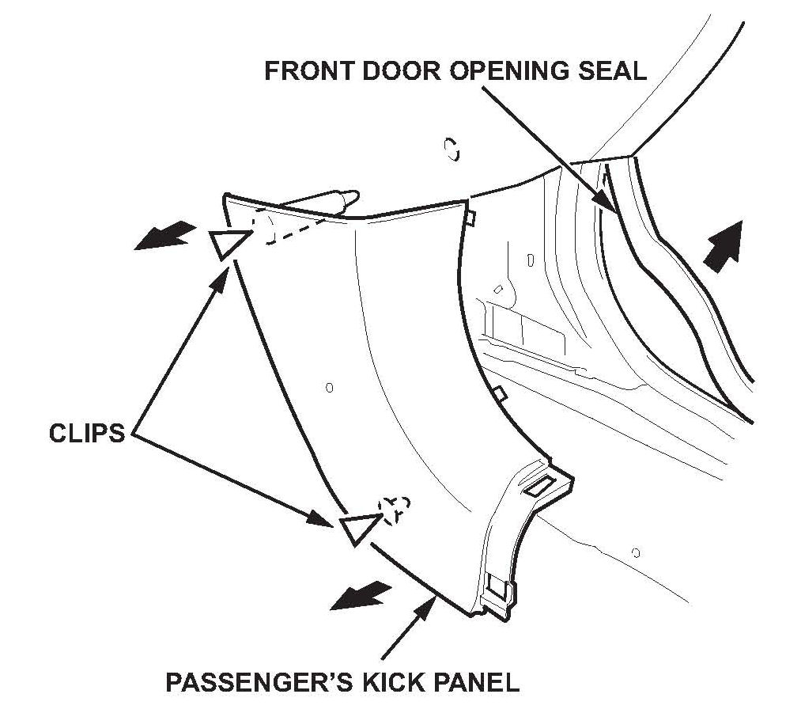
4. Pull the door opening seal away as needed, pull the passenger's kick panel back by hand to detach its clips, then remove the kick panel.
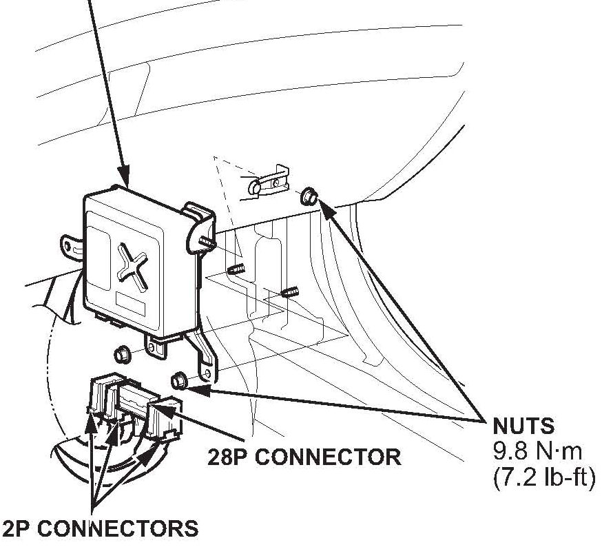
5. Disconnect the EPS control unit connectors.
6. Remove the three mounting nuts from the EPS control unit, then remove the control unit.
7. Install the new EPS control unit, torque the three mounting nuts to 9.8 N.m (7.2 lb-ft), and reconnect the connectors.
8. Reconnect the negative cable to the 12 V battery.
9. Enter the audio system anti-theft code, then enter the customer's radio presets.
10. With the ignition switch in LOCK (0), connect the HDS to the vehicle's DLC.
11. Turn the ignition switch to ON (II).
12. Make sure the HDS communicates with the vehicle and the EPS control unit. If it doesn't, troubleshoot the DLC circuit.
13. From the EPS MENU, select MISCELLANEOUS TEST, then TORQUE SENSOR LEARN, and follow the screen prompts.
NOTE:
The torque sensor is temperature sensitive. When memorizing the torque sensor neutral position, the ambient temperature must be above 68 degrees F (20 degrees C). If the torque sensor learn is not done correctly, the steering effort will not be equal in both directions.
14. Turn the ignition switch to LOCK (0).
15. Reattach the passenger's kick panel, then reattach the door opening seal.
16. Reattach the passenger's door sill trim.
17. Reattach the passenger's dashboard undercover.
REPAIR PROCEDURE B - FIT
NOTE:
Make sure you have the anti-theft code for the audio system. Write down the audio presets (AM and FM) and the XM audio presets (if equipped).
1. Make sure the ignition switch is turned to LOCK (0), then disconnect the negative cable from the battery.
2. Remove the driver's dashboard undercover:
^ Turn the lock knob.
^ Gently pull down the rear edge to detach the clip.
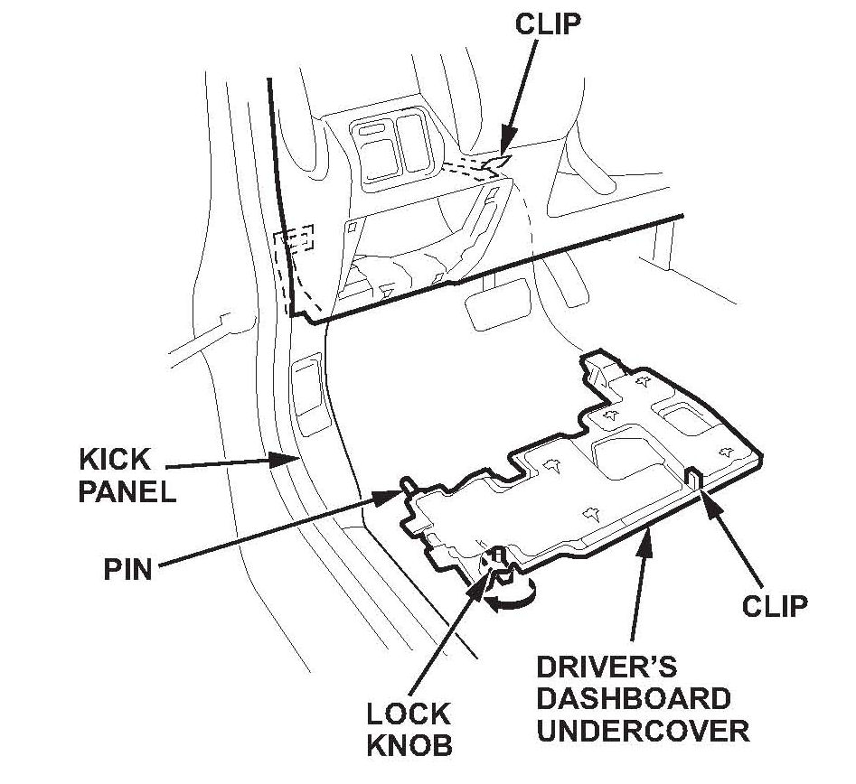
^ Pull the undercover away to release it from the clip on the body and to release its pin from the kick panel.
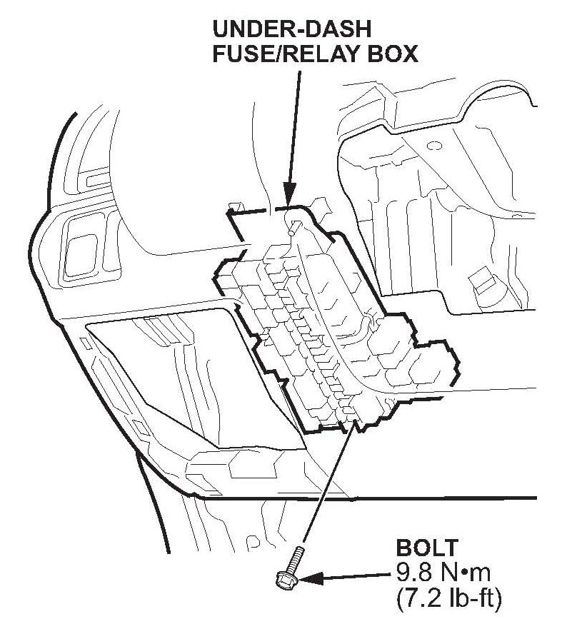
3. Remove the under-dash fuse/relay box.
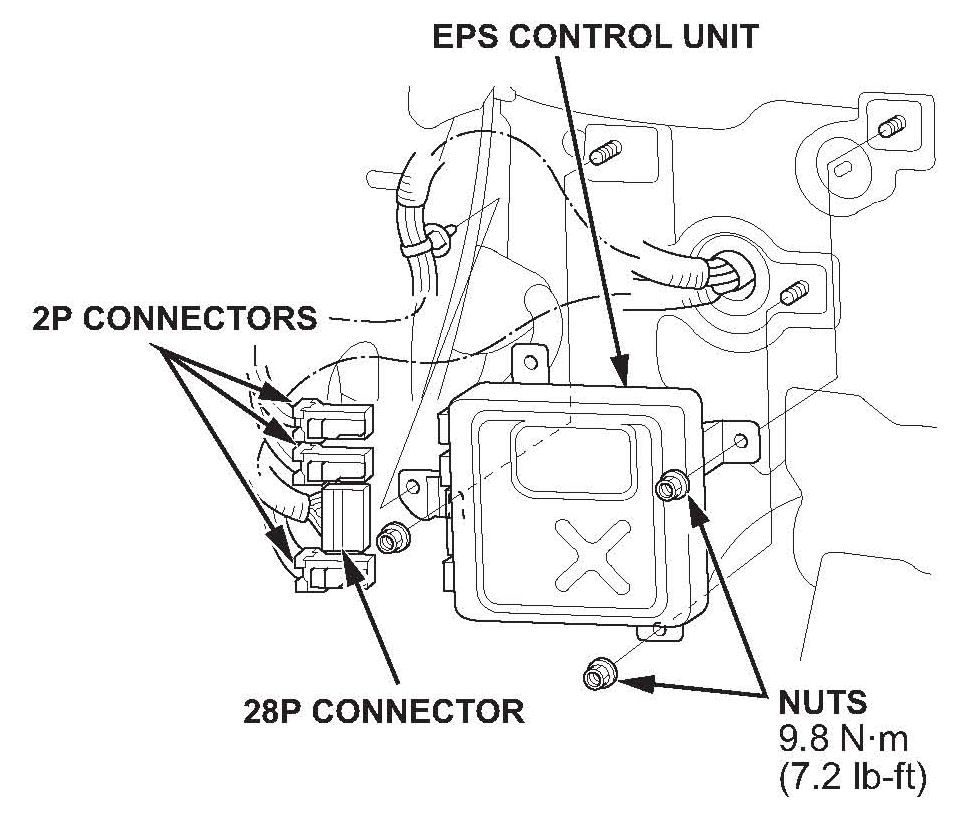
4. Disconnect the EPS control unit connectors.
5. Remove the three mounting nuts from the EPS control unit, then remove the EPS control unit.
6. Install the new EPS control unit, torque the three mounting nuts to 9.8 N.m (7.2 lb-ft), and reconnect the connectors.
7. Reconnect the negative cable to the battery.
8. Enter the audio system anti-theft code, then enter the customer's radio presets.
9. With the ignition switch in LOCK (0), connect the HDS to the vehicle's DLC.
10. Turn the ignition switch to ON (II).
11. Make sure the HDS communicates with the vehicle and the EPS control unit. If it doesn't, troubleshoot the DLC circuit.
12. From the EPS MENU, select MISCELLANEOUS TEST, then TORQUE SENSOR LEARN, and follow the screen prompts.
NOTE:
The torque sensor is temperature sensitive. When memorizing the torque sensor neutral position, the ambient temperature must be above 68 degrees F (20 degrees C). If the torque sensor learn is not done correctly, the steering effort will not be equal in both directions.
13. Turn the ignition switch to LOCK (0).
14. Reinstall the under-dash fuse/relay box.
15. Reinstall the driver's dashboard undercover.

Disclaimer